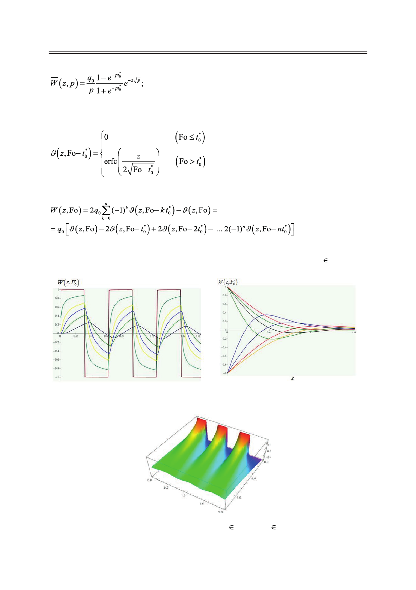

Математическое моделирование влияния релаксационных процессов на температурные
поля в упругом полупространстве
Чтобы перевести полученное решение из пространства изображений в пространство
оригиналов, нам понадобятся формулы (4), (5), (7) и следующая замена:
Оригинал имеет вид:
В системах компьютерной алгебры Wolfram Mathematica и Mathcad построена серия
графических зависимостей W(z, Fo) для различных сечений z и Фурье Fo (Fo [0;2]). Вид
некоторых из них представлен ниже (рис. 12−14).
Рис. 12. График зависимости безразмерной
температуры W(z, Fo) от Fo при фиксированных
значениях: z ={0.1, 0.2, 0.3, 0.5, 0.8, 0.9}.
Рис. 13. График зависимости безразмерной
температуры W(z, Fo) от z при фиксированных
значениях: Fo ={0.1, 0.2, 0.3, 0.5, 0.8, 0.9}.
Рис. 14. Трехмерный график зависимости
зависимости W(z, Fo) от z и Fo; z [0; 1.3], Fo [0; 2]
(температура на границе изменяется мгновенно и многократно).
48
Российский технологический журнал 2017 Том 5 № 5